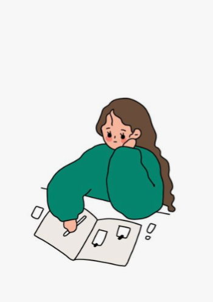

안녕하세요,
거꾸로캠퍼스 재니입니다.

Skills
M1에서 M4까지 배움을 통해 갖게된 역량입니다.
더 자세한 내용과 능력은 포트폴리오의 각 프로젝트를 보며 확인하실 수 있습니다.
더 자세한 내용과 능력은 포트폴리오의 각 프로젝트를 보며 확인하실 수 있습니다.

직접 소통하고 협력하며 팀 활동을 경험하고 어떻게 해야 더 잘할 수 있을지 학습했다.

학습 후엔 꼭 기록하고 정리하는 습관을 기르고 팀 내 회의에서도 기록을 맡으며 기록하는 능력을 길렀다.

프로젝트의 주제나 팀 내 소통을 배울 수 있는 책이나 여러 논문 등을 찾아보며 학습했다.